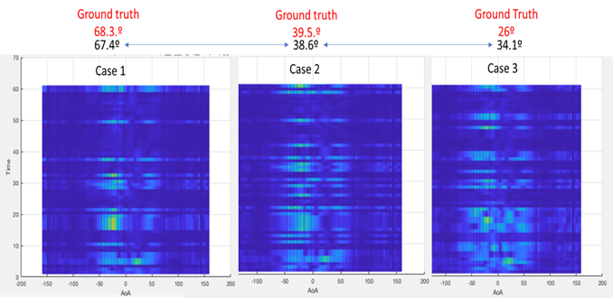
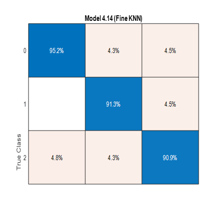

Goal: detect small consumer drones opportunistically using commodity mmWave radios and beam patterns (no active radar).
KNN classification using top-6 receiver-antenna amplitude indices under quasi‑omnidirectional receive pattern.
Non‑LOS angle estimation error using relationship between predefined beam patterns and received SNR.
Leverages ambient transmissions; detects drone‑induced beam pattern changes caused by rotor vibration (frequency & phase).
Small drones often evade conventional radar due to their low radar cross section and complex micro‑Doppler signatures. We target a passive solution using commodity mmWave (COTS) devices.
Drone rotor vibration perturbs the reflected beam pattern. These perturbations shift which receiver antennas have the highest amplitudes, producing a robust pattern usable as a fingerprint.
We avoid specialized hardware by using available beam codebooks and channel measurements in COTS devices.
R_s per beam/antenna.iFFT on selected subcarriers to expose periodic components from rotor vibration.# Antenna-index features for detection
X = [] # feature vectors
for snapshot in sweep_logs: # one sweep = all beams x antennas
amps = antenna_amplitudes(snapshot) # |A_rx| per antenna
idx_sorted = argsort_desc(amps)[:6] # top-6 indices
vib = rotor_vibration_ifft(snapshot) # optional scalar(s)
X.append(concat(idx_sorted, vib))
# Train/evaluate KNN
knn = KNN(k=3, metric="hamming") # indices act like categorical tokens
knn.fit(X_train, y_train)
acc = knn.score(X_test, y_test)
# AoA estimation by beam–SNR relation
# Given predefined complex beam weights A (codebook) and measured Rs
AoA = argmax_theta( similarity( A(theta), Rs_measured ) )
Classifier: KNN (Hamming distance over index tuples). Reported accuracy: 92.4%.
| Condition | Expectation | Status |
|---|---|---|
| Fan off | Baseline antenna index distribution | collected |
| Fan on: low speed | Moderate index shifts, lower frequency | observed |
| Fan on: high speed | Stronger shifts, higher frequency | observed |
These ablations validate sensitivity to rotor‑like vibration without requiring an actual drone in early stages.


Let A be the complex predefined beam weights and R_s the measured complex channel per beam. The received SNR varies systematically with the beam steered angle. We search for the AoA that maximizes a similarity score between A(θ) and R_s.
def estimate_aoa(A_codebook, R_meas, thetas):
# A_codebook: dict[theta] -> complex weight vector
# R_meas: measured complex response vector
best_theta, best_score = None, -1e9
for th in thetas:
score = real(dot(conj(A_codebook[th]), R_meas)) / (norm(A_codebook[th]) * norm(R_meas) + 1e-9)
if score > best_score:
best_theta, best_score = th, score
return best_theta
Alternative scores: magnitude correlation, phase‑aware cosine similarity, or learned mapping.
Top‑6 index features + KNN → 92.4% accuracy. Robust to low‑/high‑speed vibration conditions.
Result Consistent class separation via antenna index permutations.
Beam/SNR relation yields AoA with ≈ 5° error in NLOS scenarios across three spatial cases.
Note Error is geometry‑dependent; multipath may increase bias.